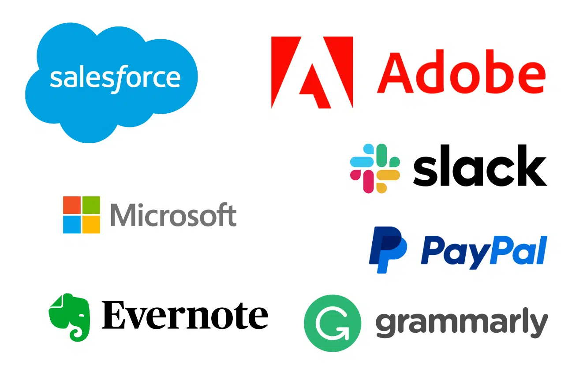

Explore the dynamic world of informatics careers where opportunities abound in various sectors. This guide will help you navigate through emerging roles, top employers, and effective strategies for career development in the fast-evolving field of technology.
Emerging Roles
Data Scientist:
Analyze complex data to forecast trends and provide solutions.
User Experience Designer:
Improve user interactions through design and testing with information technology.
Health Informatics Specialist:
Enhance patient care and efficiency through information technology systems.

Top Employers
Tech Innovators:
Google, Amazon, Microsoft
Healthcare Leaders:
Mayo Clinic, Cerner
Start-ups:
Notable opportunities in cloud computing and data security.
Career Development
Continuous Learning:
Engage in lifelong learning through workshops and online courses.
Professional Networking:
Build connections at industry conferences and on LinkedIn.
Skill Certification:
Obtain certifications in areas like cybersecurity or big data analytics.